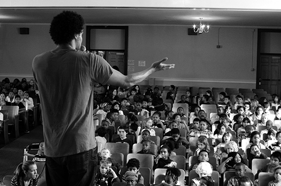
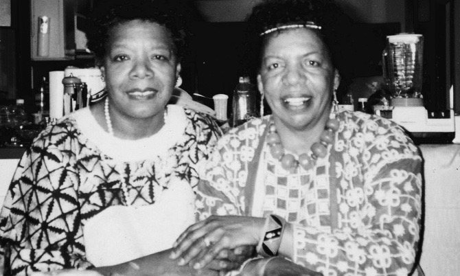
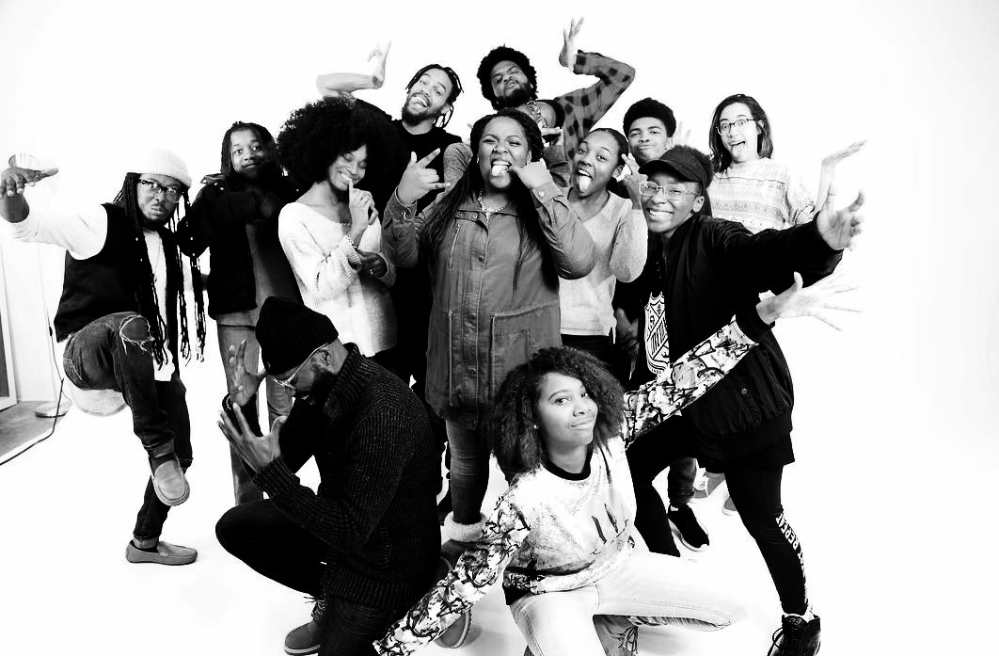
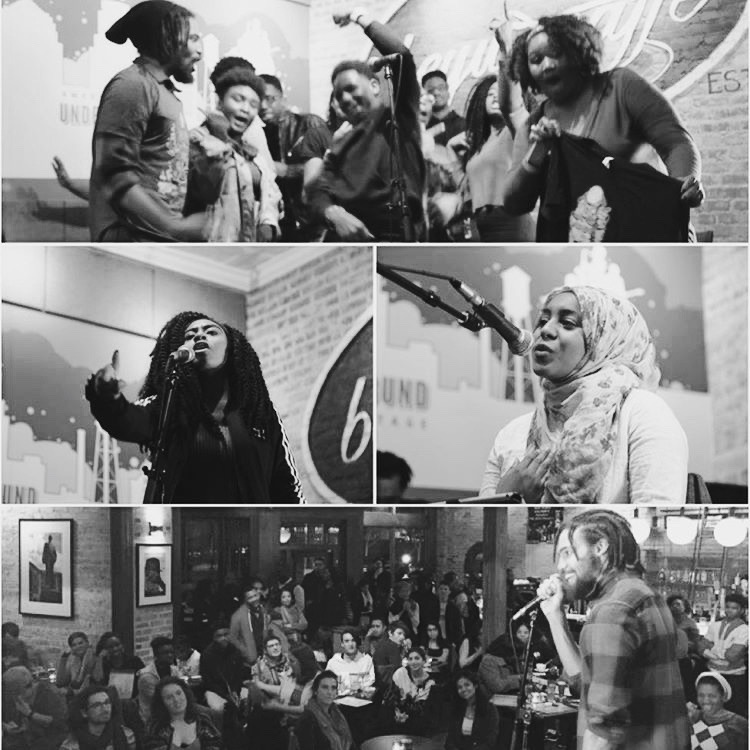

BROTHER FROM ANOTHER PLANET
Blackspace founder Pierce Freelon is an Afrofuturist. Born and raised in Durham, North Carolina his parents and grandmother fed him a steady diet of Star Trek: the Next Generation, the Museum of Life and Science, and Afrocentricity. After graduating with degrees in Black Studies from UNC Chapel Hill (BA) and Syracuse University (MA), he started searching for ways to answer his calling to art and activism. Pierce found early success co-founding the Emmy-award winning PBS web-series, Beat Making LabTM.
BLOOM WHERE YOU ARE PLANTED
In 2014, after several years teaching beat making and songwriting across Africa and its diaspora, Pierce's ancestors communicated a clear message: go home. Inspired by his Grandmother's mantra "bloom where you are planted" he returned to North Carolina and opened Blackspace Chapel Hill at 179 E Franklin Street.
SPACE IS THE PLACE
Blackspace provides free Pan-African centered social entrepreneurship and digital media resources for Carolina youth. Pierce has worked with a team of Artivists to teach workshops in beat making, computer graphics, videography, radio, spoken word and puppetry - with a particular focus on STEAM (science, technology, engineering, arts and math) curriculums.
BLACKSPACE DURHAM
In 2016 Blackspace launched a successful Kickstarter Campaign to open its Durham studio, which started programming that summer. New programs in Digital Storytelling, 3D Printing and Puppetry will launch in 2017. Read about BLK AGST summer camp in the Huffington Post. Listen to a story about "Cristo Negro" on PRI's The World. Read about 5P1N0K10 in The Indy.